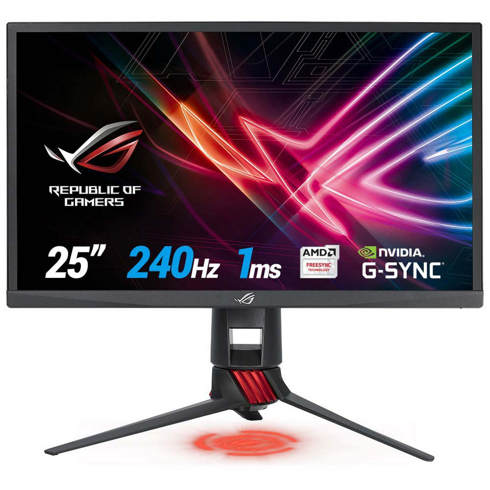
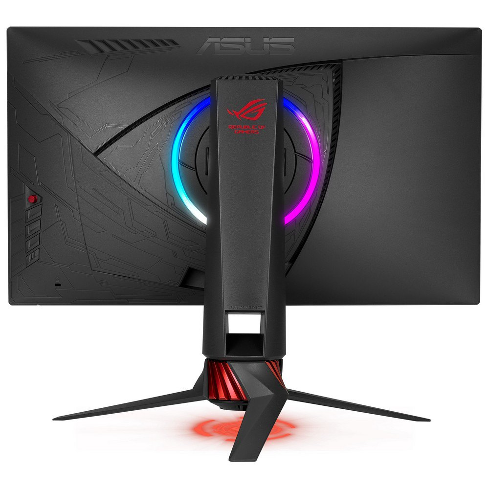
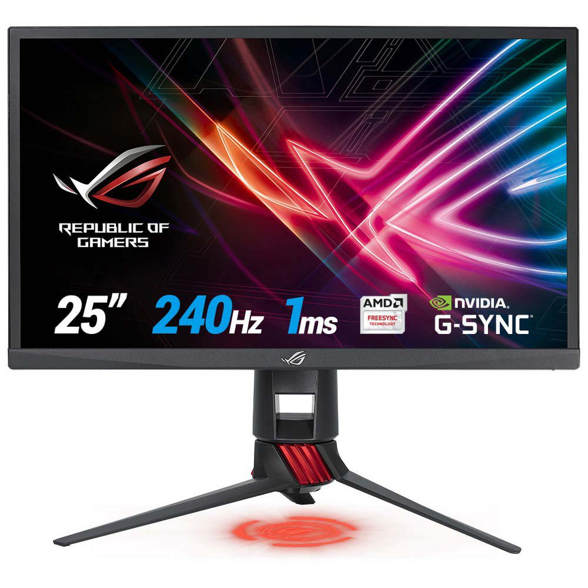
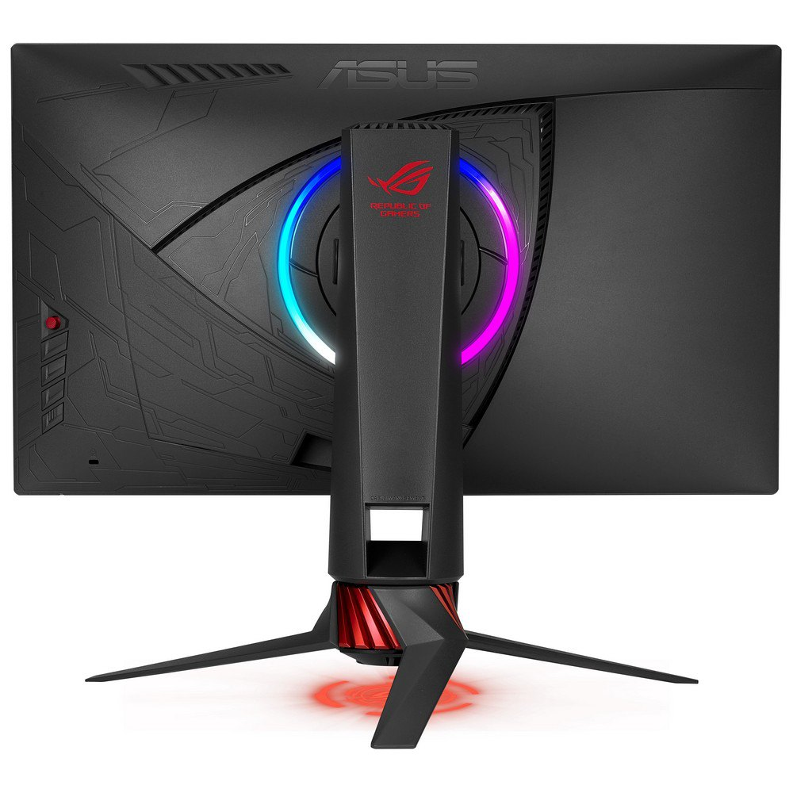

Introducing the ROG Strix XG258Q Gaming Monitor - Elevate Your Gaming Experience to Unprecedented Speeds
Immersive 240Hz Refresh Rate:
Unleash the power of speed with the ROG Strix XG258Q's 24.5-inch Full HD display featuring a native 240Hz refresh
rate. Immerse yourself in fluid gameplays with visuals that set a new standard for responsiveness. Immerse yourself
in tear-free gaming experiences with G-SYNC Compatibility, ensuring variable refresh rate (VRR) by default. This
feature, supported on NVIDIA GeForce GTX 10-Series and NVIDIA GeForce RTX 20-Series graphics cards, delivers
seamless graphics for unparalleled immersion. Say goodbye to motion blur and tearing with the ultra-fast 1ms
response time. The Adaptive-Sync technology enhances gameplay, making every moment smoother and more responsive.
ASUS Aura RGB Lighting:
Elevate your gaming setup with the Strix-exclusive design elements and ASUS Aura RGB lighting. Customize your gaming
environment with ambient lighting on the back and a signature light projection, creating a dynamic and visually
stunning atmosphere.
Designed for eSports and First-Person Shooters:
The ROG Strix XG258Q is crafted for speed, making it the ultimate choice for eSports enthusiasts and first-person
shooter aficionados. Its 240Hz refresh rate, 1ms response time, and Extreme Low Motion Blur technology ensure a
competitive edge in fast-paced gaming.
Go Back